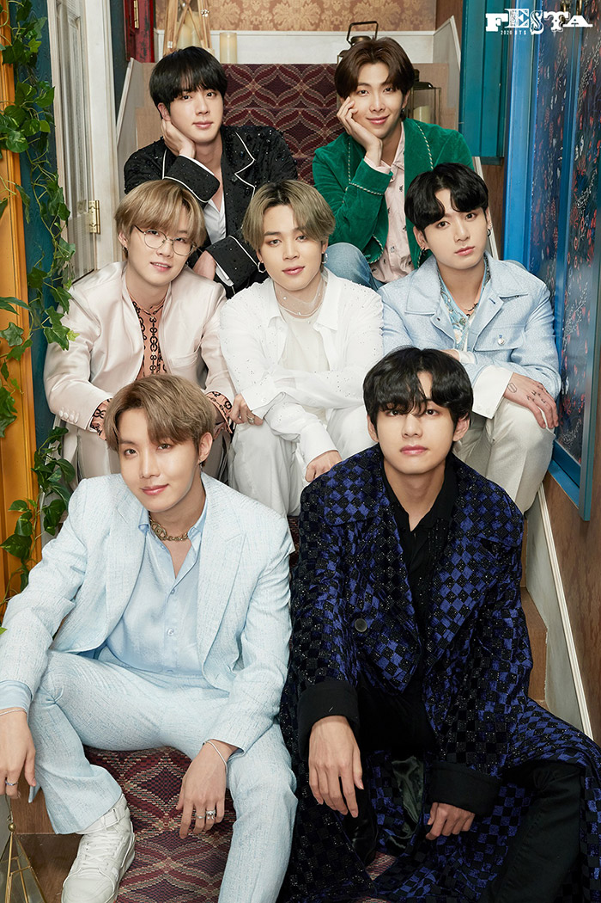
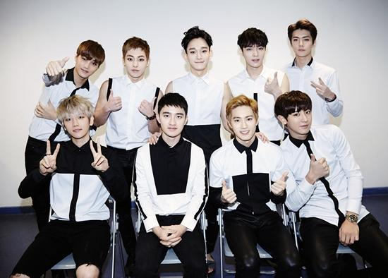

3세대 K-POP의 특징
3세대 아이돌은 대략 2012-2019에 데뷔한 K-POP그룹이다. 디지털 플랫폼의 영향력 증가로 인해 본격적인 K-POP의 글로벌화가 진행되었고 각 그룹들은 '세계관'을 통한 스토리텔링 전략을 사용하여 큰 성공을 거두었다.
대표 아티스트
- 방탄소년단
- EXO(엑소)
1. 방탄소년단
| 소속사 | HYBE |
| 데뷔 | 2013 |
| 팬덤명 | ARMY |
| 상징색 | 보라색 |
- DNA
- Dynamite
- Blood Sweat & Tears
- Spring Day
- Idol
- 글로벌 K-POP 확장의 핵심 역할, 세계적 팬덤 보유.
- 메시지 있는 노래, 스토리 서사 중심 세계관 구축.
- 빌보드 1위 등 한국 대중음악 역사적 기록 다수.
2. EXO(엑소)
| 소속사 | SM Entertainment |
| 데뷔 | 2012 |
| 팬덤명 | EXO-L |
| 상징색 | 펄 실버 |
- 으르렁
- Love Shot
- Monster
- Call Me Baby
- Ko Ko Bop
- 그룹·유닛 콘셉트가 강한 정교한 세계관 그룹.
- 칼군무 퍼포먼스와 보컬 라인 강세.
- 한국·중국 양국 시장 모두 장악한 대형 보이그룹.